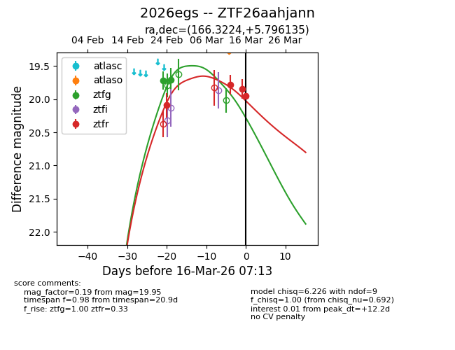
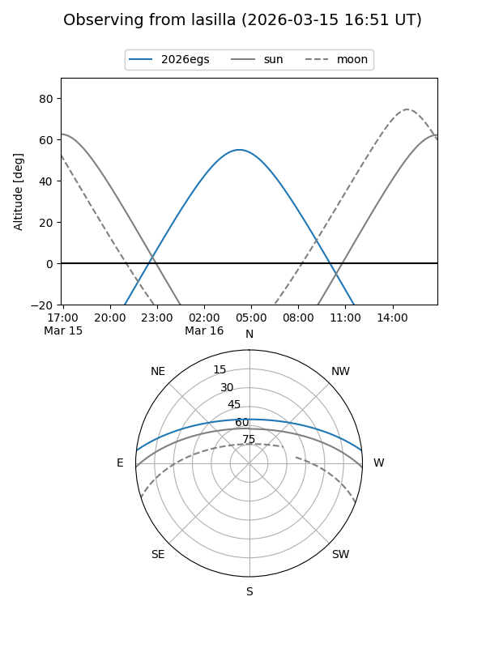
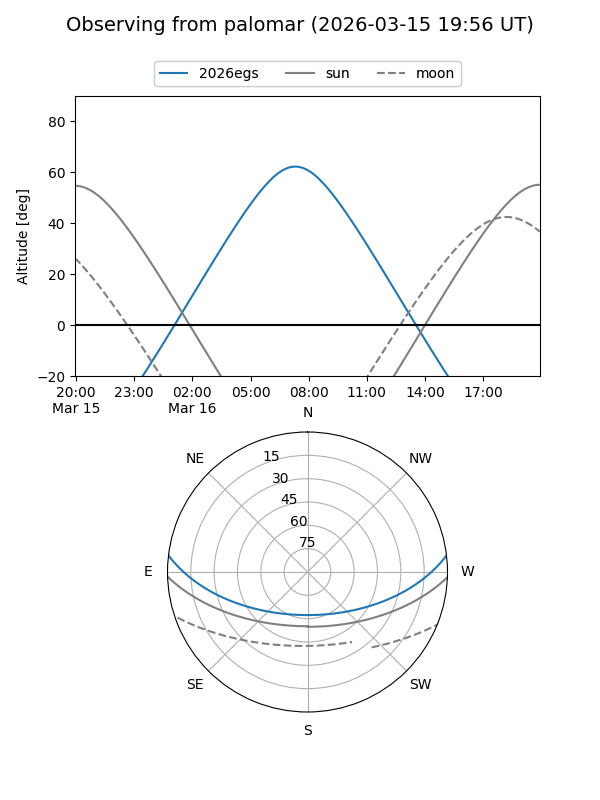
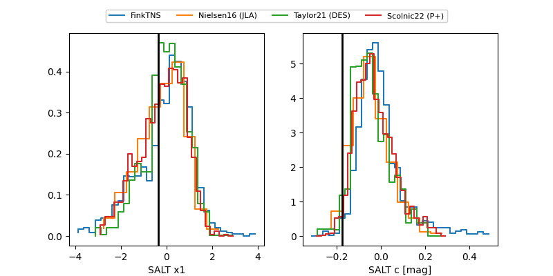

2026egs
Target 2026egs at 2026-03-16 07:15
Aliases and brokers:
FINK: link
Lasair: link
ALeRCE: link
TNS: link
YSE: link
alt names
ZTF26aahjann (ztf,fink_ztf)
2026egs (tns,yse)
Coordinates:
equatorial (ra, dec) = 166.3224,+5.79614
equatorial (HMS+DMS) = 11:05:17.38,+05:47:46.09
galactic (l, b) = (248.3400,+56.95080)
Flags:
Photometry:
last ztfg=19.71, ztfr=19.95
2 ztfg, 4 ztfr detections
Lightcurve

Visibility


Additional plots
